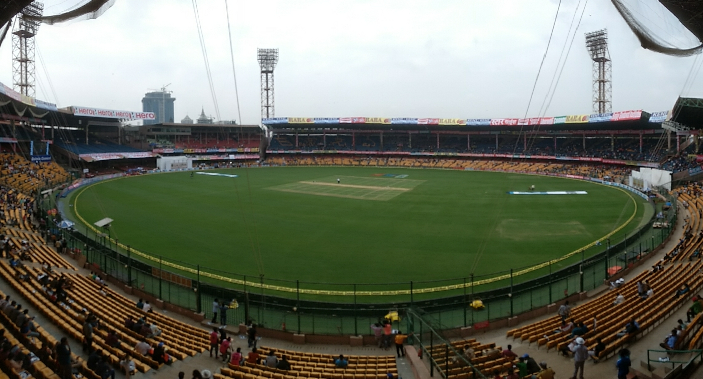

Not just the first win. The belief that became a legacy.
IPL 2026BACK-TO-BACK CHAMPIONS
The crown. Defended.
31 May 2026 · Ahmedabad
RCB 161/5GT 155/8
Won by 5 wickets · 12 balls remaining
Kohli’s unbeaten 75 off 42 balls (Player of the Match) and Rasikh Salam’s 3/27 secured a second consecutive IPL title after RCB topped the league table (18 pts) and routed GT 254/5 in Qualifier 1.
Mandhana’s 87 and Georgia Voll’s 79 powered the WPL-record chase of 204. Radha Yadav finished the job with back-to-back boundaries, making RCB the first franchise to win the WPL and IPL in the same calendar year.
From the inaugural 2008 Bangalore roundel to the crowned gold rampant lion of Royal Challengers Bengaluru. Select any era below to inspect its badge, palette, captains, and defining moments.
SCROLL-DRIVEN LOGO & JERSEY EVOLUTION · 2008 TO 2026
Every thread. Every transformation.
Scroll or click through the vertical timeline below—the stage dynamically transitions the official RCB crest, jersey silhouette, and ambient era glow from 2008 to the 2026 championship armor.
DIGITAL INFOGRAPHIC · HALL OF FAME & ALL-TIME LEGENDS
The titans of Chinnaswamy.
Interactive career progression bars, 360° Chinnaswamy run-scoring wagon wheels, milestone badges, and insider trivia for Kohli, AB de Villiers, Chris Gayle, and Smriti Mandhana.
THE MATCHDAY ARCHIVE
Big nights. Bolder memories.

Illustrative RCB home-ground photograph, not the venue or a photograph of the 2026 final. Photo: Aniket Suryavanshi · CC BY 2.0. See Sources & credits.
31 MAY 2026 · AHMEDABAD
The crown. Defended.
Kohli’s unbeaten 75 guided RCB to a second consecutive IPL championship.
1 WIN IN FIRST 8 GAMES → 6 STRAIGHT WINS → PLAYOFFS
The Miracle of May · IPL 2024 Comeback Streak
Sitting at the bottom of the table with just 1 win from their first 8 games, Royal Challengers Bengaluru mounted one of the greatest comebacks in IPL history—winning six straight from late April to the 18 May knockout against CSK.
ONE FRANCHISE. MORE THAN ONE STAGE.
Every league. The same belief.
Men's IPL. Women's WPL. And the Champions League chapter.
A sourced historical collection, not a live feed. Stats snapshots: IPL 2025 and WPL 2024. Later seasons are not implied by those snapshots. CLT20 was a separate club competition; it is now discontinued.
THE PEOPLE BEHIND THE BELIEF
The challengers. Always our own.
Historical profiles. Current official directories.
Featured IPL 2025 and WPL 2024 players, plus icons and alumni. Player photographs show verified RCB kit only; they may be from a different season. If no reusable RCB-kit photograph was verified, a labeled jersey illustration is shown instead. No national-team or other-franchise portraits are used.
↗
Solo RCB-kit portraits & official social handles: Local photographs are strictly solo portraits in RCB franchise kit with verified open licenses (Virat Kohli, Cameron Green, Rahul Dravid). Because personal social-media posts and league squad portraits are copyrighted, each player card and profile links directly to their official social handle, IPL squad, and WPL team for their latest solo photos.
Tap a player to discover their story. One badge. Countless stories.
FEATURED CHAMPIONSHIP SNAPSHOTS
Star power. In numbers.
Curated player comparisons for IPL 2025 and WPL 2024.
Rankings are among the featured RCB players, not the entire league. Batting SR = runs per 100 balls. “—” means not verified; it never means zero. No cross-season or cross-league totals are combined. Stats use credited secondary tables; open a player for the exact source links.
HEAD TO HEAD
Two challengers. Side by side.
Choose two players from the snapshot above.
VS
BEYOND THE FEATURED STARS
Every season. Every recorded player.
IPL 2008–2026 · WPL 2023–2026. Locally bundled, source-attributed match data.
Loading the locally bundled season archive…
Season match-participant statistics
Player
Listings*
Bat inns
Runs
Balls
SR
HS
4s
6s
Overs
Wickets
Economy
Catches
Stumpings
*Listings = matches where the source lists the player, not certified official appearances. Includes source-listed participants and recorded substitute fielders, not every registered bench player. Zero means no recorded contribution in covered matches; “—” means the rate is not applicable. Source names are retained (for example, V Kohli). Super overs are excluded. Some abandoned fixtures have no source file.
Wikipedia squad-table extracts are transformed under CC BY-SA 4.0; other reported rosters compile factual names and replacement notices from their linked publishers. These are historical sources, not independently certified final registrations. A missing field is not a zero. Withdrawn and replacement players can both appear; that does not mean they were registered simultaneously. Squad tables and match-derived statistics remain separate to avoid false identity matches.
BUILT ON BELIEF. WRITTEN IN RED.
The road to forever.
2008 — 2026 ARCHIVE
GET TO KNOW YOUR CHALLENGERS
The club. The complete journey.
IPL · WPL · CLT20
Full name
Royal Challengers Bengaluru
Founded
2008 · Bengaluru, Karnataka
Home ground
M. Chinnaswamy Stadium
Former name
Royal Challengers Bangalore
Name change
Bangalore → Bengaluru · 2024
Women's team
WPL debut · 2023
Final tournament finish, not league-table position. Explicitly scoped historical results.
From perennial entertainers to back-to-back champions.
Every era from the founding in 2008 to the 2026 WPL–IPL calendar double.
THE FULL IPL SEASON RECORD
Nineteen seasons. Every chapter.
Choose a year below. Win rate excludes no-result matches.
View all 19 season records (2008–2026)
IPL results · League position is distinct from the final tournament finish
Year
Captain(s)
Played
Won
Lost
NR / Tied
League Pos
Final Result
Key Highlight
Season records and era notes incorporate the complete 2008–2026 franchise chronicle; final finishes are cross-referenced with the club-history archive. Super-over outcomes (2013, 2020) are already included in wins/losses and noted in the NR / Tied column.
SOME MOMENTS NEVER LEAVE YOU
Hit pause. Feel it again.
Explore the stories behind the milestones. Open a card for the match, context, and sources.
THE OFFICIAL WATCHLIST
More than the final whistle.
Match highlights, player reels, and interviews open on IPLT20 or WPLT20. Video assets and publisher thumbnails are not copied.
Only verified RCB-kit player photographs and an archival home-stadium photo are used. Captions distinguish match photography from illustrative images. Match coverage remains with its original publisher and opens externally.
IPL Champions (2025 & 2026 Back-to-Back) · WPL Champions (2024 & 2026). The first franchise in history to win both the WPL and IPL titles in the same calendar year.